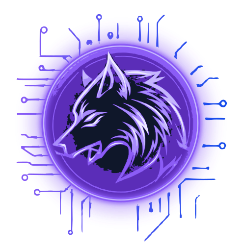
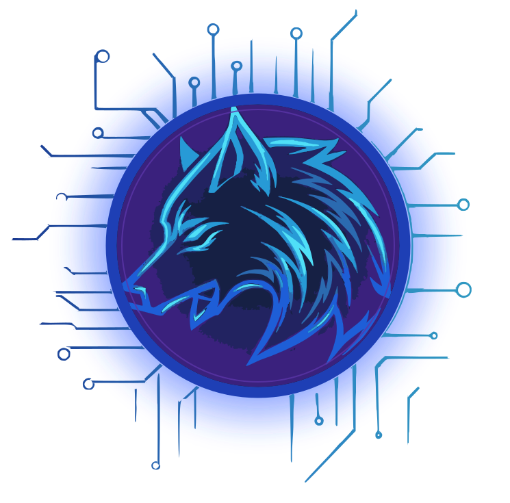
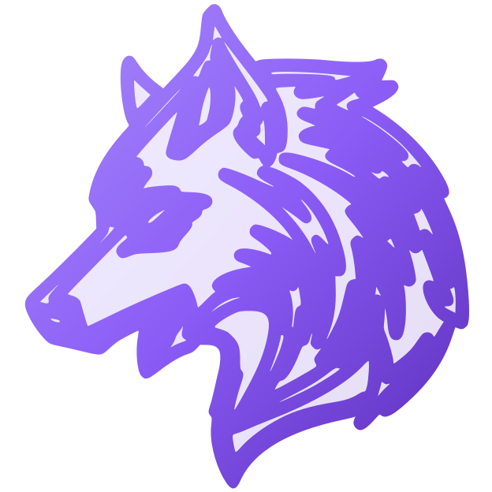
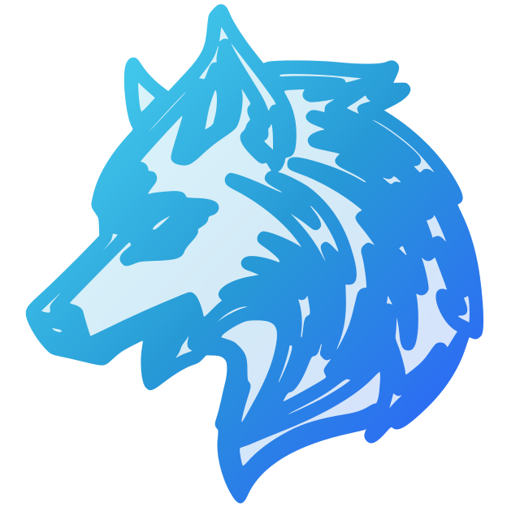

O lobo ancião da FACOM/UFU


GRIZZ
Olá, newbie! Sou o Grizz, o agente veterano que vai te salvar das burocracias acadêmicas. Pergunta aí sobre qualquer coisa que envolva papelada que eu te salvo.